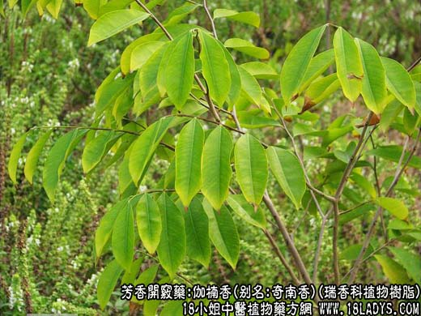

【中药概述】伽楠香，别名奇南香，为瑞香科植物沉香或白木香近根部含有多量树脂的木材。辛，甘、温。 理气止痛，通窍。适用于胸闷不舒、气滞疼痛、风痰闭塞等症。多单方使用研用。 【药效鉴别】伽楠香既可理气辟秽，又能通窍醒脑，除用治胸闷不舒、气滞呕逆外，尚可用于风痰气闭、神识昏迷之证。通窍行气之功强于沉香。 【用量用法】0.5——1g，宜入丸散剂。不宜入汤剂。 【注】只其量少难得，价格昂贵，临床用之较少。
本文解释权归中药大全，本文地址https://www.daquan.com/post/1954.html